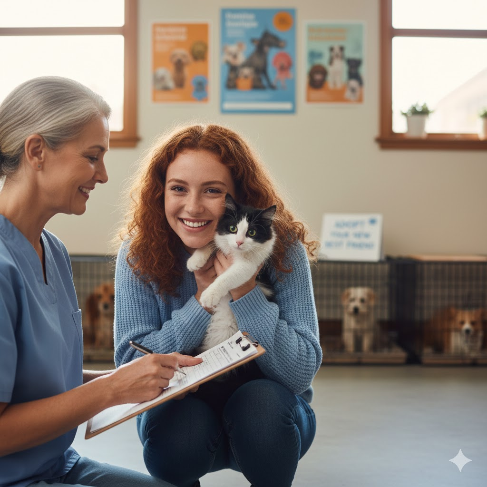
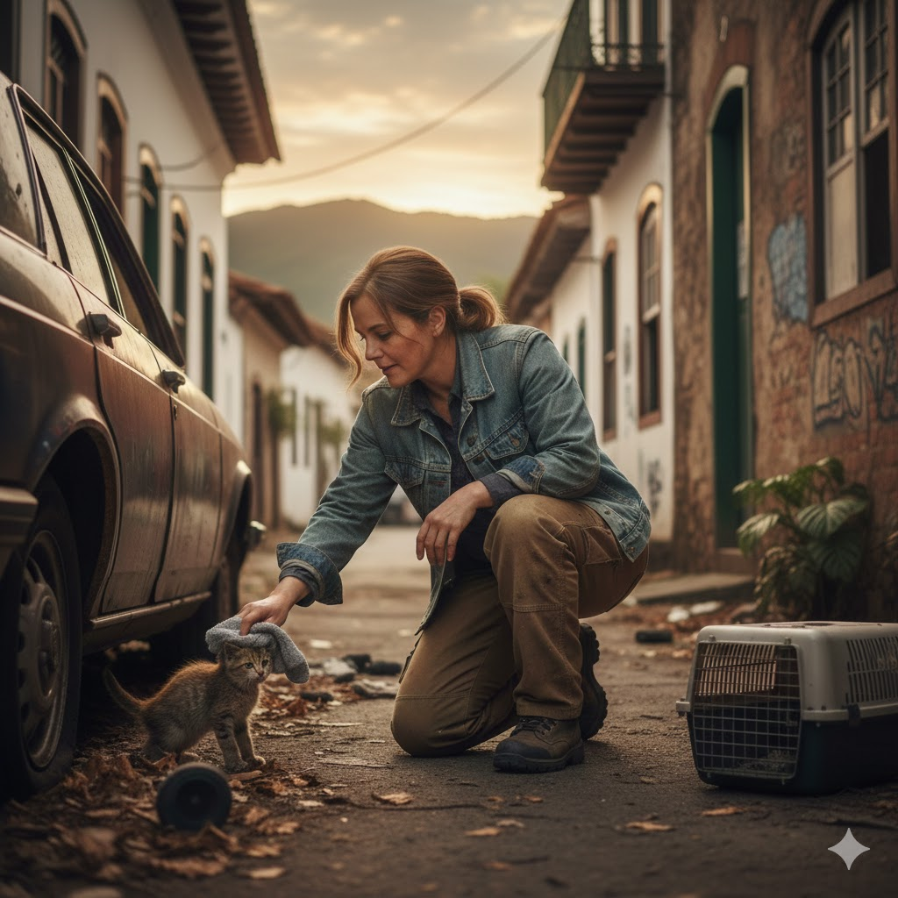
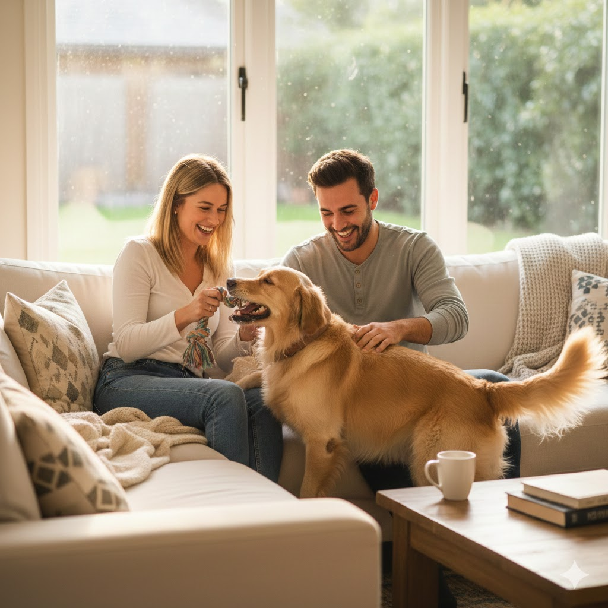
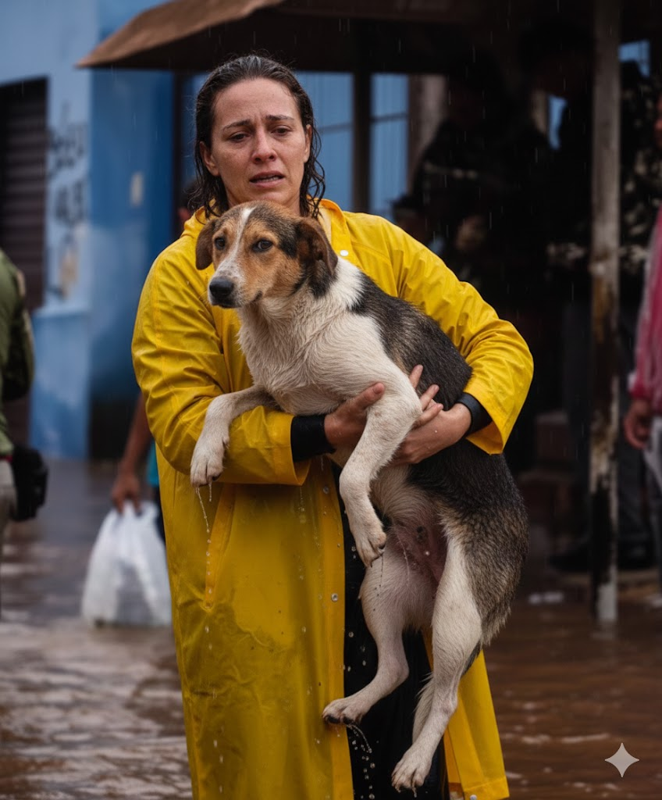

Mais de 12.000 Histórias Salvas

Veja Nossos Pets Adotados

Veja Um Dos Nossos Resgates
Próximo Ev

"A melhor decisão que tomamos!"
"O Mia mudou nossa casa."
"Gratidão pela Toca dos Peludos."
Sua doação ajuda no resgate, alimentação e cuidados veterinários.
